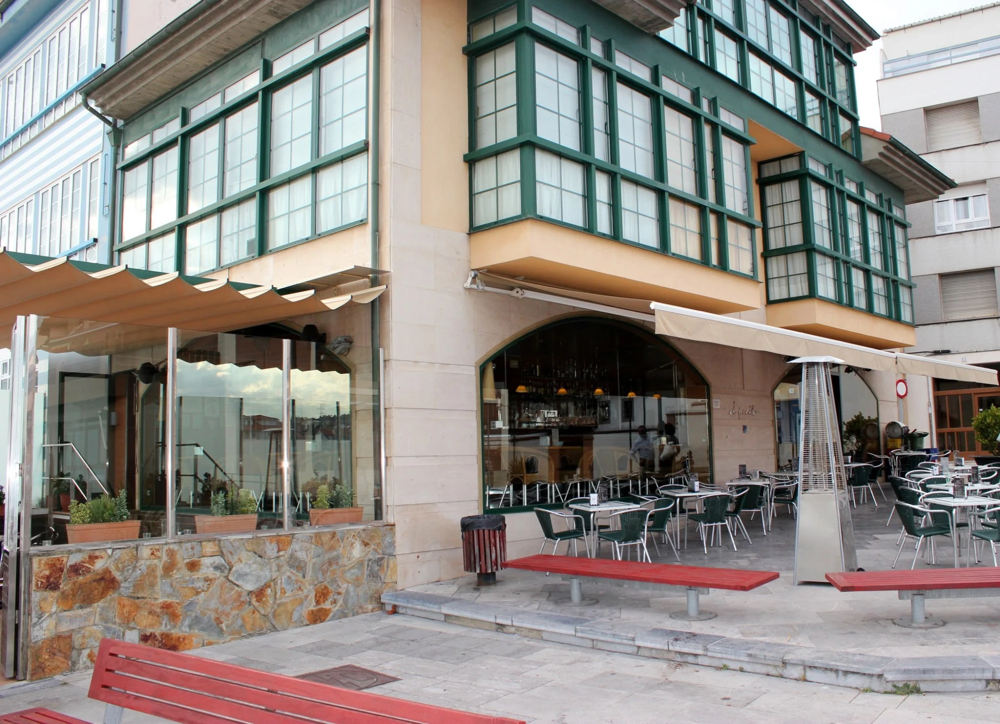
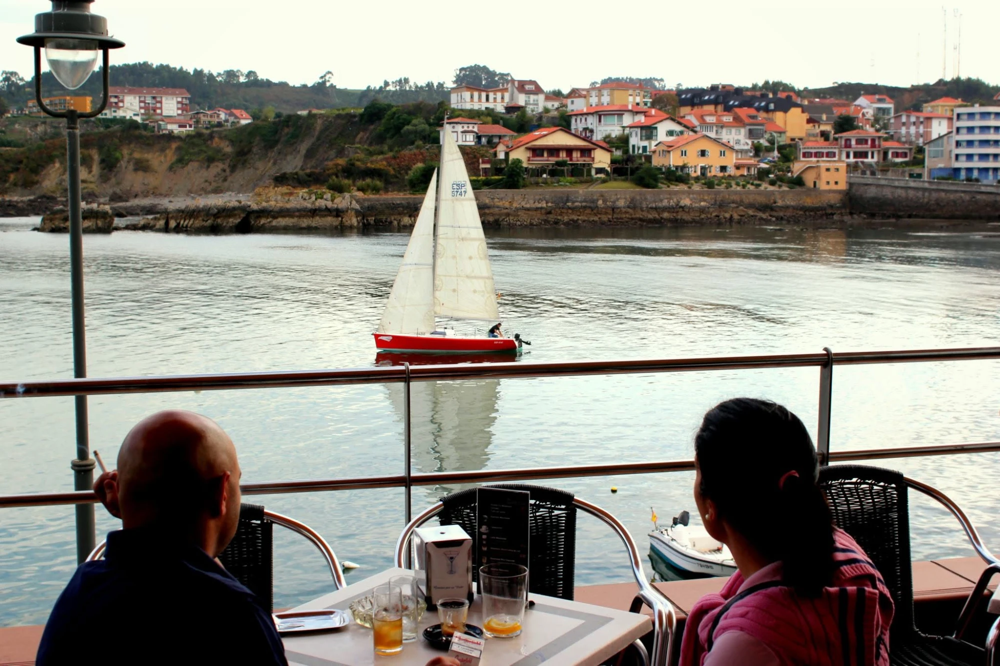
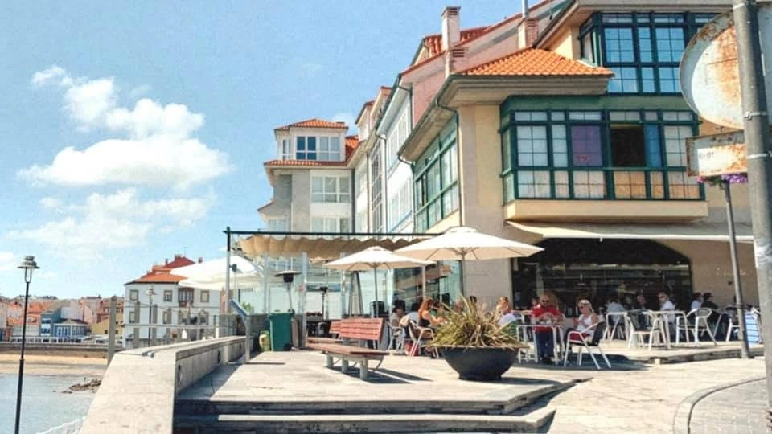

Luanco · Asturias
Un café, una tortilla o unas croquetas frente al puerto. Siempre ha sido el sitio.
El bar
En la calle Riba, mirando al puerto y a la isla del Carmen, El Puerto es de esos sitios donde se entra a por un café y se sale dos horas después. Terraza al aire libre, comedor interior y un equipo que te conoce por el nombre.
Cocina de siempre, producto del Cantábrico y una carta pensada para compartir.

Lo que no falla
Con vistas. Para muchos, el mejor motivo para pasarse por aquí.
Del Cantábrico, para compartir.
De atún y pimientos, merluza y gambas o bacalao.
De jamón o de puerro y gamba.
Galería


Opiniones
Visítanos